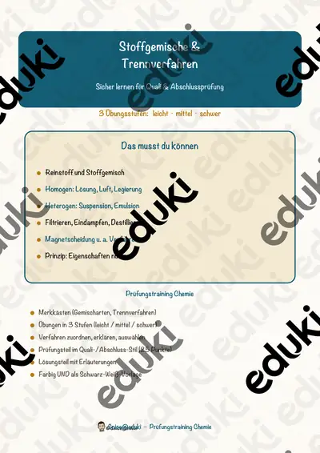
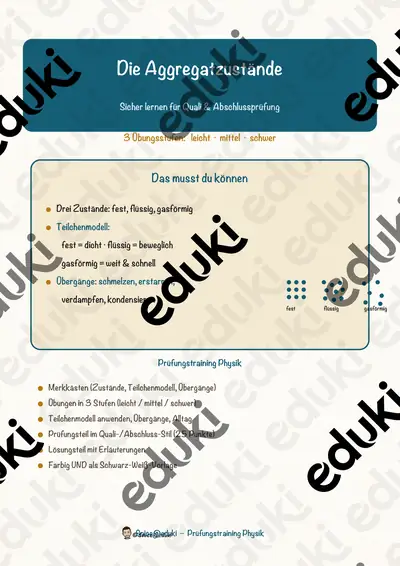

Stoffe und Aggregatzustände: Arbeitsblätter für Klasse 5–9 (Chemie)
Stoffe und ihre Eigenschaften bilden den Einstieg in die Chemie. Fest, flüssig, gasförmig, Lösen und Trennen sind Alltagsvorgänge, die sich erklären lassen.
Als roter Faden eignen sich Aggregatzustände, Stoffgemische und Trennverfahren; Destillation, Löslichkeit und Kristalle lassen sich je nach Klassenstufe zuschalten.
In den Lehrplänen der Länder ist das Thema im Fach Chemie verankert, meist in der Sekundarstufe I (Klasse 5–9). Die Schülerinnen und Schüler beschreiben Stoffeigenschaften und trennen Gemische.
Ob Vertretungsstunde, Stationenarbeit oder Hausaufgabe: Die Arbeitsblätter zu Stoffe und Aggregatzustände lassen sich flexibel einsetzen, etwa mit Aggregatzustände als Auftakt und Kristalle als Abschluss. Musterlösungen sparen die Korrekturzeit. Leistungsstarke und schwächere Lesende erhalten über die Lesespurgeschichten Texte in drei Stufen.
Aus unserem Katalog gehören 5 Materialien zu diesem Thema, darunter Die Destillation, Stoffgemische und Trennverfahren und Die Aggregatzustände. Der Bestand umfasst 1 Lesespurgeschichte, 2 Prüfungstrainings und 2 Lückentexte mit Hörverstehen und reicht über Klasse 5–8. Salzwasser eindampfen ist ein einfacher Versuch mit sichtbarem Ergebnis.
Das gehört zum Thema
Passende Arbeitsblätter und Materialpakete

Die Destillation – Lesespurgeschichte mit Rätselaufgaben (Klasse 8)

Stoffgemische und Trennverfahren – Prüfungstraining Chemie (Klasse 8)

Die Aggregatzustände – Prüfungstraining Physik (Klasse 8)

Kristall Lückentext mit Wortspeicher Hörverstehen und Suchsel

Destillation Lückentext mit Wortspeicher Hörverstehen und Suchsel
Häufige Fragen
Für welche Klassenstufe passen die Arbeitsblätter zu Stoffe und Aggregatzustände?
Die 5 Materialien zu diesem Thema sind für Klasse 5–8 ausgelegt, die meisten davon für Klasse 8. Einzelne Titel lassen sich mit Anpassung auch eine Stufe darunter oder darüber einsetzen.
Welche Inhalte decken die Materialien zu Stoffe und Aggregatzustände ab?
Behandelt werden unter anderem Aggregatzustände, Stoffgemische, Trennverfahren und Destillation. Welche Aspekte in Ihrer Klasse Vorrang haben, richtet sich nach dem Lehrplan Ihres Bundeslandes.
Wie setze ich Stoffe und Aggregatzustände im Unterricht ein?
Salzwasser eindampfen ist ein einfacher Versuch mit sichtbarem Ergebnis. So entsteht aus den Blättern eine kleine Einheit, die sich auf zwei bis drei Stunden verteilen lässt.
Mehr Material nach Fach und Klasse
Verwandte Lehrplanthemen
- Verbrennung, Feuer und Sauerstoff (Chemie, Klasse 5–9)
- Atome, Elemente und Periodensystem (Chemie, Klasse 8–10)
- Säuren, Laugen und Salze (Chemie, Klasse 8–10)
- Wärme und Energieformen (Physik, Klasse 5–10)